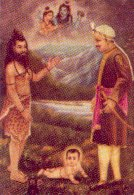
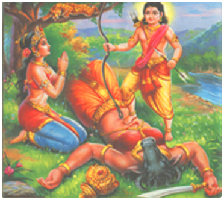
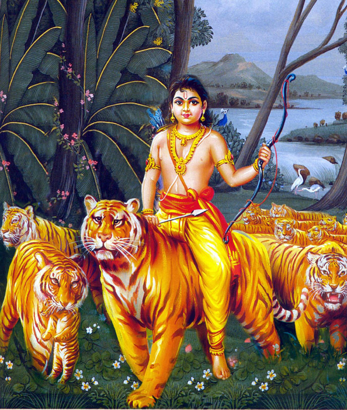
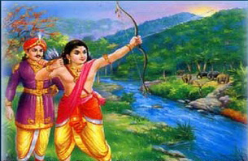

The members of Pandya dynasty ousted by Thirumala Naicker the ruler of the erstwhile Pandya Empire spanning Madurai, Thirunelveli and Ramanathapuram lived in places like Valliyur, Tenkasi, Shengottah, Achankovil and Sivagiri. They had also established their supremacy in parts of Travancore, and some of them belonging to Chempazhanattu Kovil in Sivagiri were given the right to rule the country of Pandalam by the King of Travancore, some eight hundred years ago. King Rajashekara, the foster-father of Lord Ayyappan belonged to this dynasty.
A just and precocious sovereign King Rajashekara was held by his subjects in high esteem. Under him, the region was witnessing a goldenage. But the king had one sorrow - he was childless and thus had no heir to inherit his throne. Both the hapless king and his queen prayed ceaselessly to Lord Shiva for a child.
Around the same time, a demon by the name of Mahishasura undertook severe penance (tapas) and consequently Lord Brahma was forced to grant his wish that nobody on earth could annihilate him. Emboldened by Brahma's boon, Mahishasura commenced systematic destruction of people and pulverized tribes and communities. Terrorised and fearing his wrath, people fled to distant lands. Realizing that only a superhuman power could exterminate the wayward Mahishasura, the devas appealed to Goddess Durga, who killed him in a bloodybattle.
Determined to avenge her slain brother, Mahishi, the sister of Mahishasura secured a boon from Lord Brahma that no being except the offspring of Vishnu (Hari) & Shiva (Haran) could slay her. In due course of time, Mahishi went to Devaloka and began harassing the Devas who in turn implored Lord Vishnu to intervene. As the boon was that nobody except the son of Lord Shiva & Vishnu could kill Mahishi, Lord Vishnu assumed the female persona of Mohini who helped devas prize Amrit away from asuras; it was decided that the male child born out of the union of Mohini and Lord Shiva would be placed under the care of Lord Shiva's childless devotee, King Rajashekhara of Pandalam.

On one of his hunting trips to the forests near River Pampa, as King Rajashekara reclined on the banks of river mulling over the natural beauty of the surroundings and waterfalls, he heard an infant's wails from the forest. Astounded, he followed the sounds and came upon a beautiful child furiously kicking its feet and arms. The king stood there, perplexed - he longed to take the child home to his palace.
Whilst King Rajashekhara beheld the divine child, a sadhu appeared from nowhere and instructed him to take the infant to his palace. Also the mendicant assured him that the child would mitigate his dynasty's sufferings and that when the boy turned twelve, Rajashekhara would be aware of his divinity. As the child was wearing a gold chain, the sadhu directed the King to name him 'Manikandan' - one with a golden neck.
Ecstatic, Rajashekhara took Manikandan home and narrated the happenings to his queen. They both felt that they had been blessed by LordShiva himself. All except the Diwan who had entertained hopes of becoming king after Rajashekhara, rejoiced in the royal couple's happiness.
As a child, Manikandan was very intelligent and precocious. He excelled in martial arts and shastras and surprised his guru with his brilliance and superhuman talents. Peace and prosperity reigned in Pandalam. Eventually, Ayyappan's guru concluded that the boy was no ordinary mortal but a divine being. Upon completing his studies, Manikandan went up to his teacher to offer guru dakshina and seek his blessings in turn.
As he approached his spiritual master for ashirwaadams, the guru explained to Manikandan what he had already surmised about him, that he was a divine power destined for superhuman glory. The guru then beseeched him to bestow vision and speech upon his son who was blind and dumb. Manikandan placed his hands on the guru's son and the boy immediately gained eyesight and speech. Requesting that this miracle be revealed to none, Manikandan returned to the royal quarters.
Meanwhile the Queen had given birth to a male child who was named Raja Rajan. Sensing these miraculous turn of events were somehow inextricably linked to Manikandan, Rajasekara, decided to crown him King; he obviously considered Lord Ayyappan his eldest son. Everbody with the exception of the King's Diwan, rejoiced. This wily minister, who secretly nursed kingly ambitions, hated Manikandan and devised manifold plots, including poisoning of food to exterminate the divine avatar. Manikandan had a few narrow escapes, yet his body bore an injury that none could cure. Finally, Lord Shiva himself in the garb of a healer cured the young boy.
His plans foiled, the Diwan told the Queen that it was highly improper for Manikandan to succeed Rajasekara, as her own son was alive. Since Arthasastra justifies any misdeed with a noble end, he instigated her to feign illness; he assured the Queen that he would make his physician proclaim that she could be cured only by the application of tigress' milk. Manikandan would be impelled to go to the forest where he would fall a prey to wild animals, or even if he returned home without accomplishing the task, Rajasekara's love for him would be the same as before. Blinded by her devotion to her own son, the Queen vowed to help the Diwan and pretended as though she were suffering from a terrible headache. The King grew alarmed and summoned his physicians who were unable to revive the seemingly ailing Queen. Eventually the Diwan's accomplice declared that she would be cured of the malady only if the milk of a lactating tigress were made available. Rajasekara proclaimed that he would hand over half his kingdom to anybody who could cure the hapless Queen.
The team of soldiers sent by Rajasekara with the sole purpose of getting the milk returned empty-handed. Manikandan offered to help, but the King would not heed his pleas to go to the forest, citing the boy's tender age and impending coronation as reasons. Unperturbed, Manikandan requested his father to do him a favour. Rajasekara, ever the indulgent parent relented immediately; the boy seizing the opportunity pressed him to let him collect the milk.Manikandan stalled Rajasekara's efforts to organize a band of brave men to accompany him into the forest; he argued that the tigress would leave silently upon seeing the crowd of soldiers. Reluctantly Rajasekara bid farewell to his favourite son and made him take food stocks and three-eyed coconuts, in honour of Lord Shiva.
The Panchabuthas of Lord Shiva closely followed Manikandan as he entered the forest. But on the way, he chanced to witness the atrocities of the demoness Mahishi in Devaloka. His sense of justice outraged, Manikandan hurled Mahishi onto the earth below; she fell on the banks of the Azhutha River. A bloody battle soon ensued and at the end, Manikandan mounted Mahishi's chest and commenced a violent dance that reverberated within the earth and the Devaloka. Even the Devas were frightened. Mahishi realized that the divine being on her was the son of Hari and Haran, chastened, she prostrated before the young boy and died.

This dance was witnessed by Lord Shiva and Mahavishnu from a place called Kalakatti (It is said that Leela, daughter of Kavalan, a Karamban, with a face of Mahishi and freed herself from the curse and obtained Moksha by the grace of Shri Dharma Sastha, which is described in Sabarimala Temple as Malikapurathu Amma, by which name she has a temple there)
Following his confrontation with Mahishi, Manikandan entered the forest for tigress' milk. He had a darshan of Lord Shiva who informed him that even though he had fulfilled the divine plan, he still had one major task to accomplish. Manikandan was reminded about his grief-stricken father and ailing mother; also he was assured of Lord Indran's assistance in obtaining the much prized tigress' milk. Manikandan made his way to the Royal palace on Lord Devendran, disguised as a tiger; they were accompanied by female devas in the guise of tigresses and male devas as tigers.

The people of Pandalam panicked upon seeing the boy and the tigers and hurriedly sought shelter. Soon after, the Sanyasi, who had first materialized before Rajasekara in the forest, when he heard a child's wails appeared again and revealed Manikandan's true identity to the wonder-struck Sovereign. The King grew silent and pensive, as Manikandan approached the palace gates with the tigers. The boy descended from the tiger's back and informed the solemn King that he could get the milk from the tigresses and cure the Queen of the mysterious ailment. Unable to contain himself any longer, Rajasekara fell at the lad's feet and begged for forgiveness, he had finally seen through his Queen's pretence; her malady had ceased the moment Manikandan had left for the forest. On the day he returned from the forest, Manikandan turned twelve years old.
King Rajasekara decided to punish his Diwan as the latter was responsible for his son's exile into the forest. Manikandan, however advised restraint; he held that all had unfolded in accordance with the divine order, through the will of God. Also he reminded his father that as he had accomplished the task for which he had created himself, he would return to Devaloka without fail. Before his departure, the lad told the King that he as he was pleased by the latter's unflinching faith and devotion, he would grant him whatever boon Rajasekara requested for. Immediately, the King Rajasekara told him that they wanted to construct a temple in his memory and beseeched him to suggest a suitable place for the temple. Manikandan aimed an arrow which fell at a place called sabari, where in Sri Rama's era a Sanyasini called sabari observed Dhavam. Lord Manikandan told the King to build the temple in that place and then he disappeared.

Later, acting upon the advice of Saint Agasthya King Rajasekara laid the foundation stone of the temple at Sabarimala. Lord Manikandan, had stated emphatically that he would grace only those devotees who offer Darshan after observing fortyone days' penance or vrtha that involves strict abstinence from family desires and tastes; the devotees are expected to adhere to a way of life akin to that of a brahmachari, constantly reflecting on the goodness of life. Whilst they make their way up the steep slopes of Sabarimala, they adorn themselves with three-eyed coconut and foodstuff/Aantha Garland in their heads, as the Bhagwan did when he went to the forest to fetch tigress milk, and bathed in River Pampa raising slogans of Saranam and climb the eighteen stairs.
King Rajasekara, in due course of time completed the construction of the shrine and the sacred eighteen stairs leading to the temple complex. As the King mulled over the seemingly perplexing task of placing Dharmasastha's idol in the temple for darshan, he was reminded of the words of the Lord himself - the River Pampa is a holy river as River Ganga, Sabarimala is as holy as Kasi - Dharmasastha sent Parasuraman, who resurrected the land of Kerala from the bottom of the ocean, to Sabarimala; it was he who carved the figure of Lord Ayyappa and installed it on the day of Makarasankranthi.
Every year, millions converge upon Sabarimala irrespective of caste or creed, with garlands and irumudis, chant paeans to Lord Ayyappa, bathe in holy river Pampa, climb up the eighteen stairs, hoping to catch a glimpse of Lord Ayyappa, the Dharmasastha.
The Jewel Casket is carried on head from the ancestral residence of the royal family of Pandalam to the Shrine on the day. A Garuda, the Brahaman kite, follows this ornaments-carrying procession, hovering about in the sky, After these ornaments are worn on the Lord the bird circles the temple in the sky three times and disappears. Excited by this sight the devotees begin to chant "Swamiye Saranam Ayyappa". A Star never seen before in the sky appears on the day of Makarajyothi day before the sighting of the Jyoti. A Jyoti is seen for a little time on the hilltop showing the presence of Swami Ayyappan gracing his devotees.